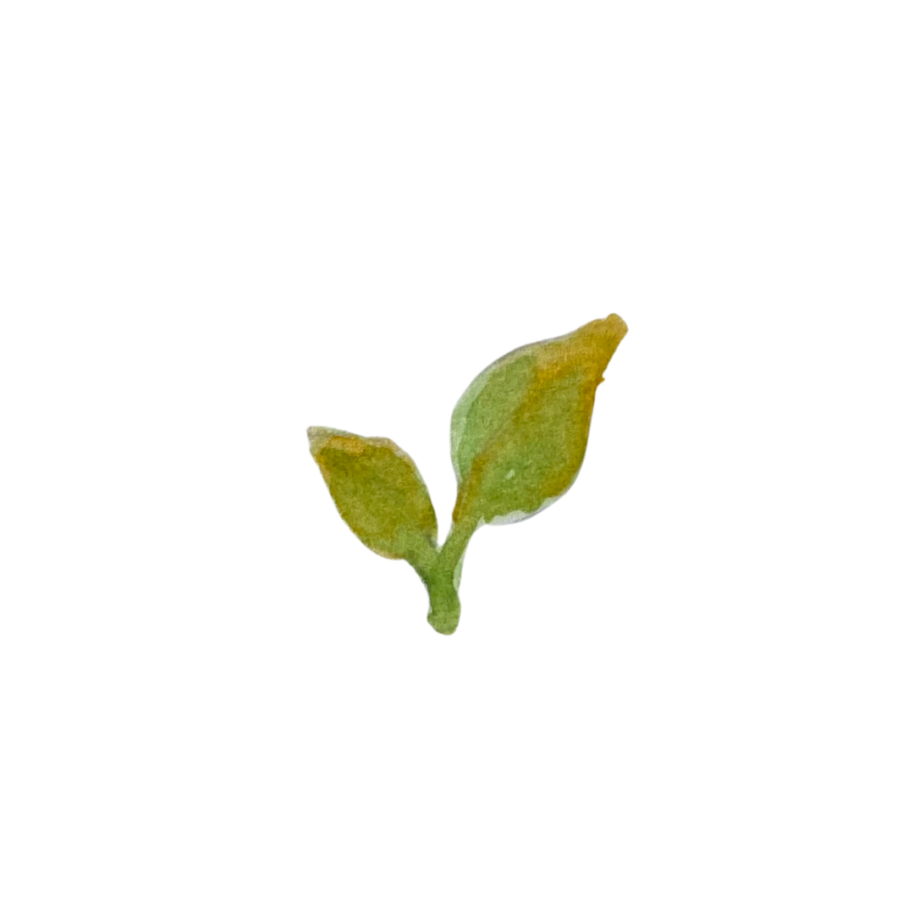
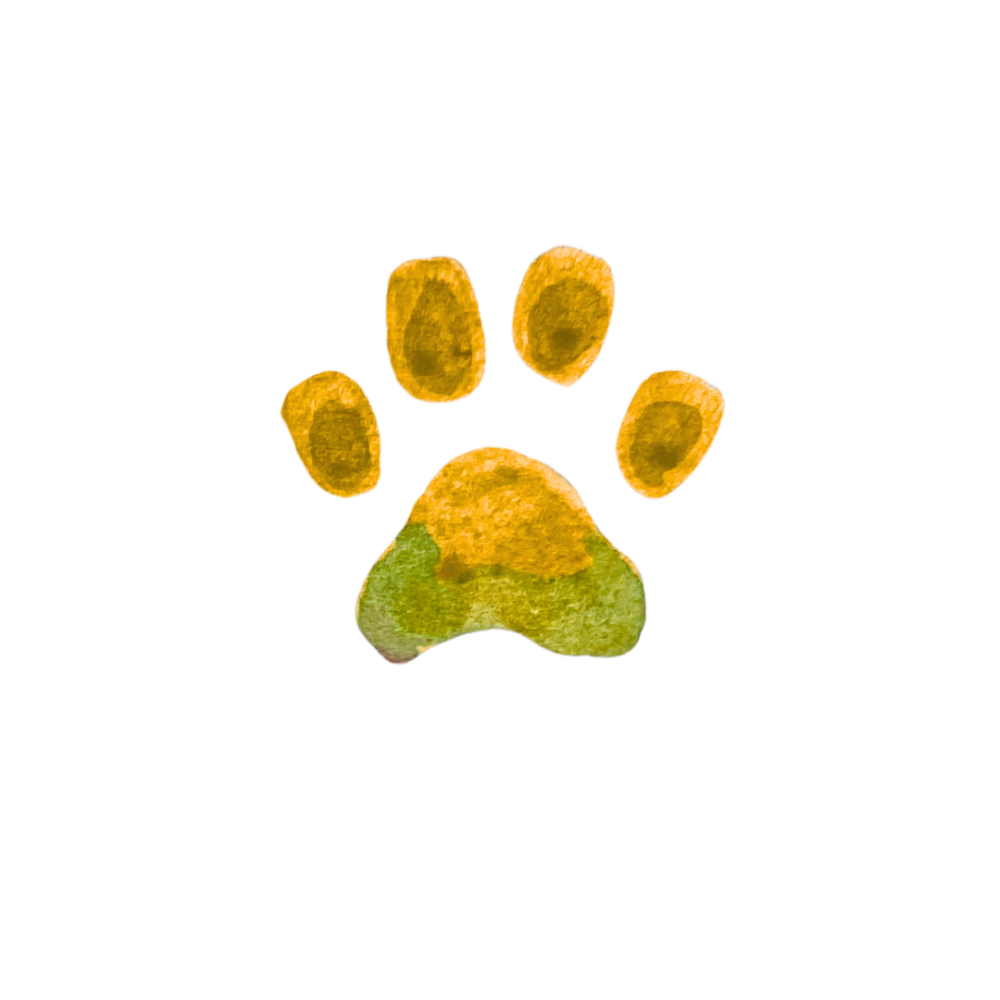
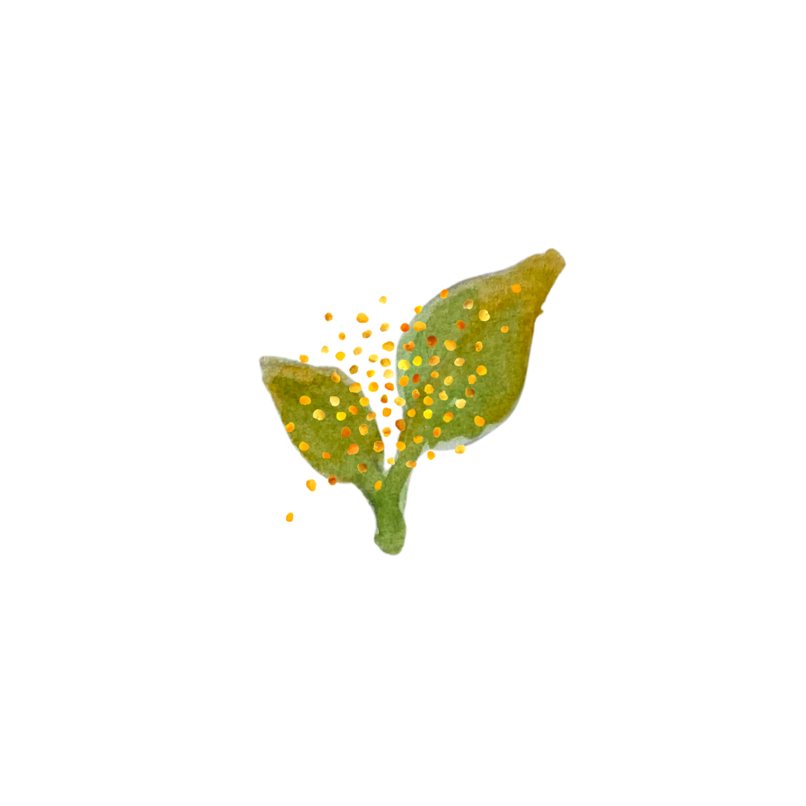
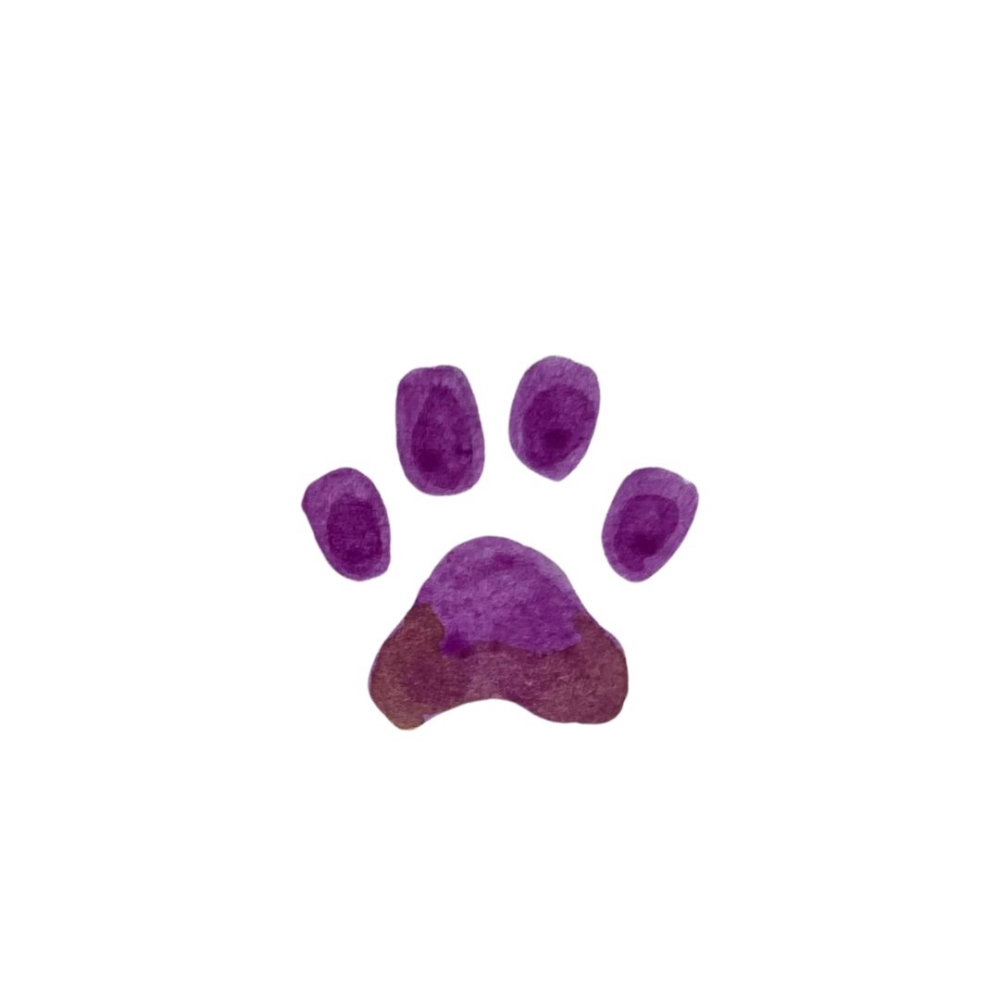
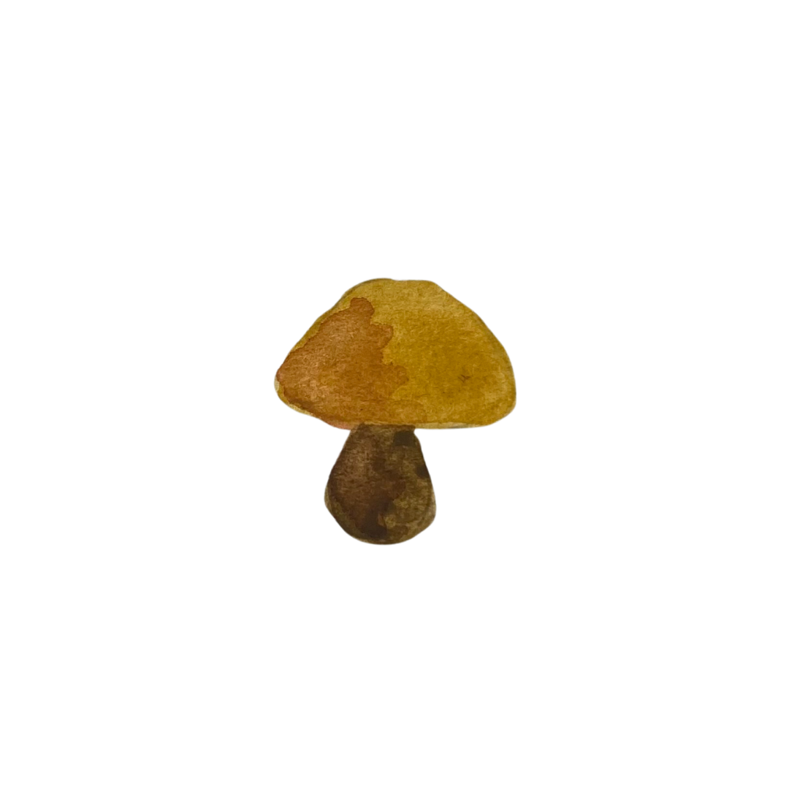
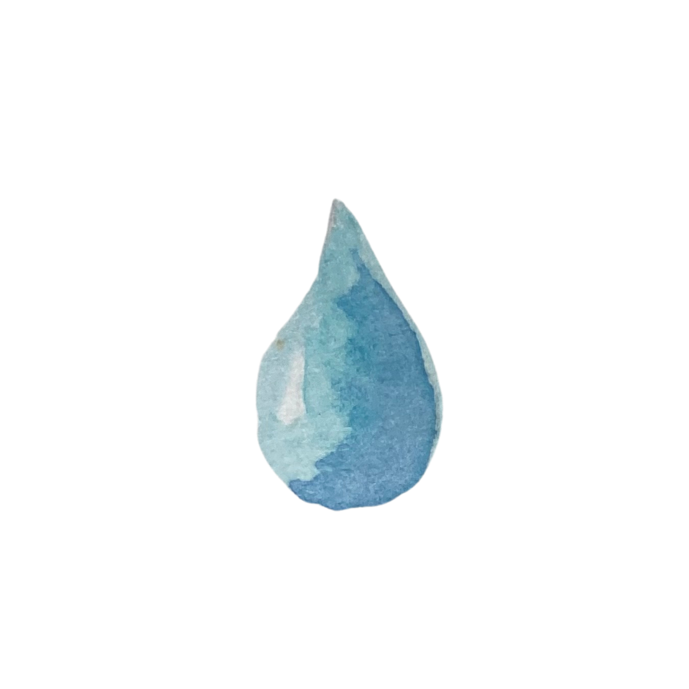
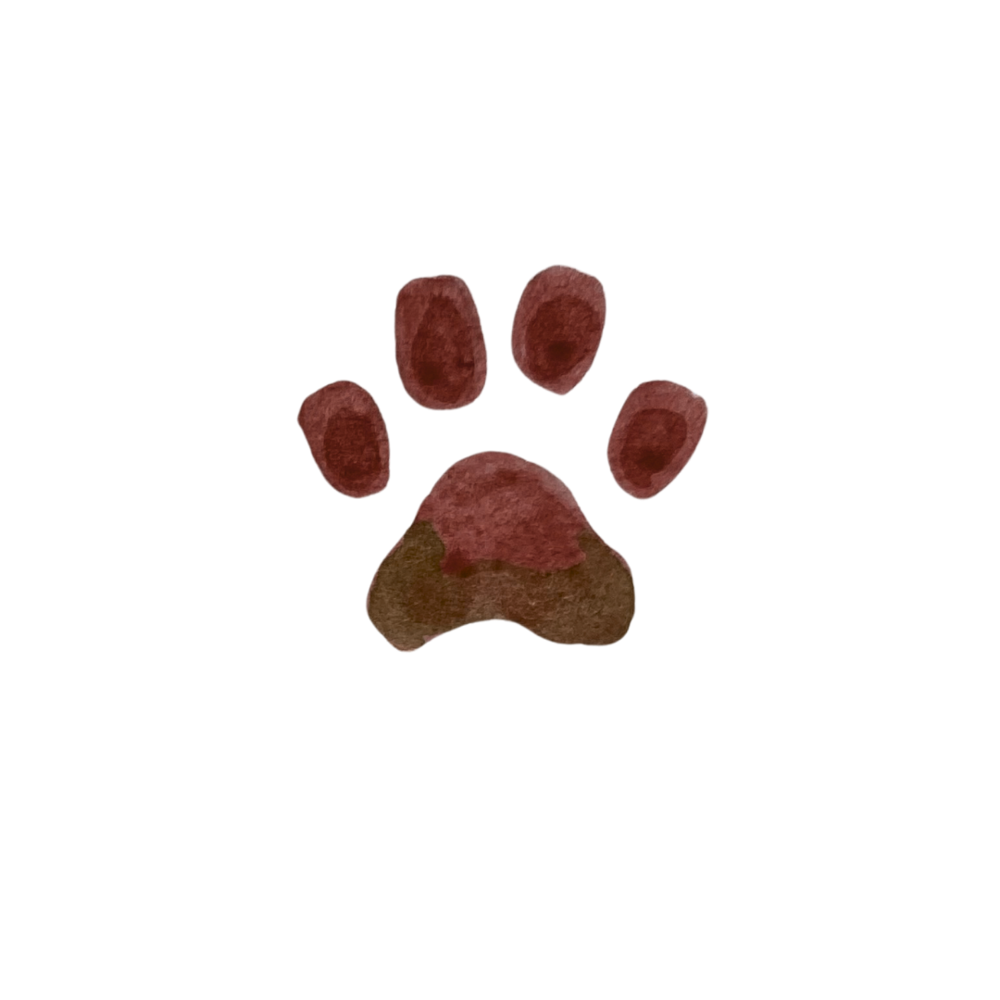
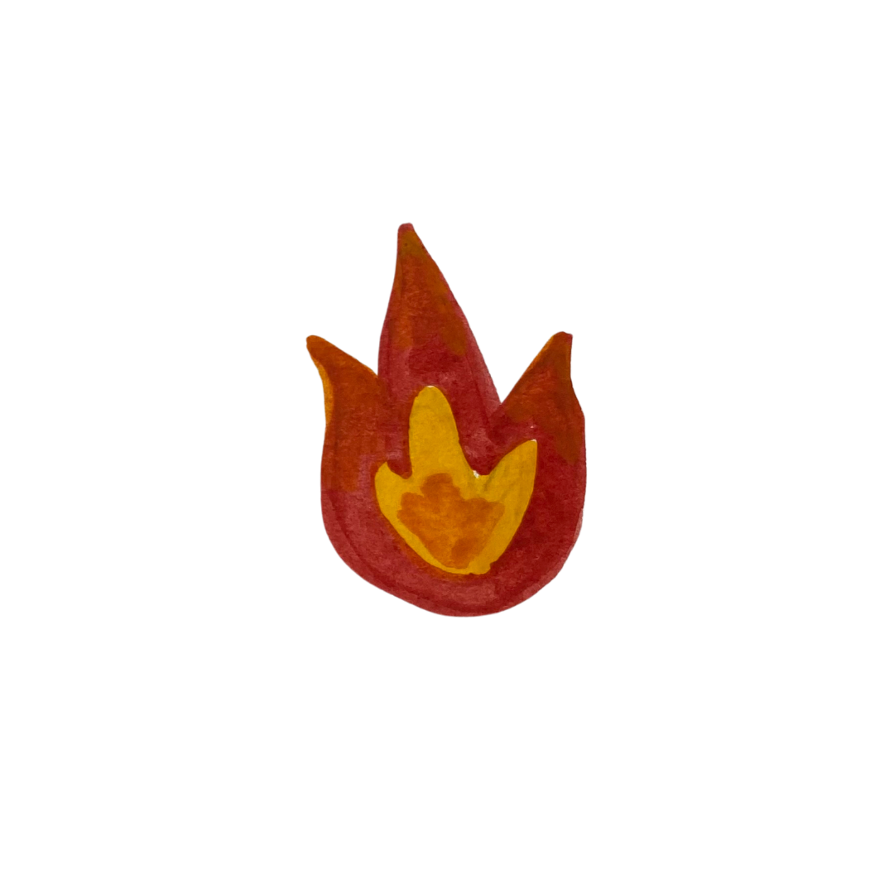
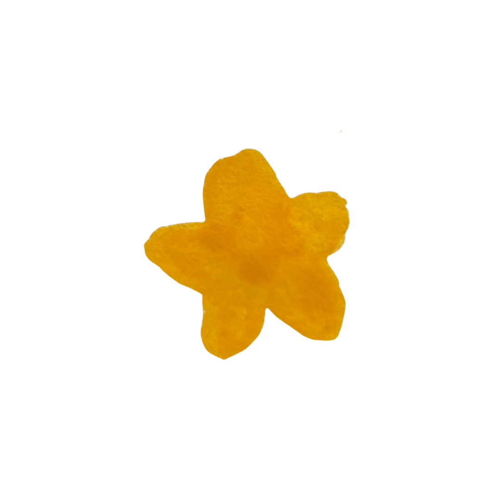

Objetivo do Jogo
Você está no meio de um conflito real: de um lado, a incrível
diversidade de plantas e animais buscando o equilíbrio da Rede
Trófica, do outro, a rápida expansão da fronteira agrícola. Sua missão
é garantir que sua teia de vida sobreviva!
Como vencer
Construa um ecossistema do Cerrado equilibrado em uma grade
4×4, formando redes tróficas reais e garantindo
resiliência a eventos ambientais. A vitória é decidida pela
maior pontuação total, somando pontos base das
cartas, objetivos de margem e pontos extras.
Jogadores
Exatamente 2 jogadores, devido à quantidade de
cartas de objetivos disponíveis no deck.
Deck
130 cartas no total, distribuídas para garantir
estabilidade da cadeia alimentar.
Cartas do Deck
130 cartas no total.
Organismos e elementos do bioma

Plantas
30 cartas
+1 ponto
Jogadas em qualquer espaço. Base da cadeia.

Herbívoros
14 cartas
+2 pontos
Ao lado de uma Planta.

Polinizadores
10 cartas
+2 pontos
Ao lado de uma Planta Arbórea.

Onívoros
10 cartas
+3 pontos
Ao lado de Planta ou Herbívoro/Onívoro.

Fungos
10 cartas
+1 ponto
Jogados em qualquer espaço.

Corpos d'água
9 cartas
+1 ponto
Jogados em qualquer espaço.

Carnívoros
8 cartas
+4 pontos
Ao lado de Herbívoro ou Onívoro.

Fogo Cerrado
5 cartas
especial
Reposiciona 1 carta do seu Bioma.
Cartas especiais

Objetivos
20 cartas
Posicionamento
Cada jogador organiza seu ecossistema em uma grade 4×4. Os 9 biomas
internos são onde a vida acontece.
Diagrama da grade 4×4
canto
vazio
Objetivo
Coluna
Objetivo
Coluna
Objetivo
Coluna
Objetivo
Linha
Bioma
Bioma
Bioma
Objetivo
Linha
Bioma
Bioma
Bioma
Objetivo
Linha
Bioma
Bioma
Bioma
Grade Interna
(3×3)
Os 9 Biomas onde organismos, plantas e corpos
d'água são posicionados.
Margens
Linha do topo → Objetivos de Coluna. Coluna esquerda → Objetivos
de Linha.
Preparação
-
1
Coloque uma carta de Guia Rápido virada para cima diante de cada jogador. Ela servirá de mapa para a montagem do bioma.
-
2
Separe as cartas em dois baralhos: Cartas de Bioma (organismos, água, fogo e intervenções) e Cartas de Objetivo. Embaralhe-os separadamente e coloque-os virados para baixo no centro da mesa.
-
3
Distribua três Cartas de Bioma para cada jogador. Mantêm-nas em mãos sem mostrar ao adversário.
-
4
Distribua três Cartas de Objetivo para cada jogador. Os jogadores devem posicioná-las imediatamente nos espaços da linha do topo, definindo seus três Objetivos de Coluna desde o início da partida.
-
5
Revele três Cartas de Bioma e três Cartas de Objetivo do topo de cada baralho e coloque-as viradas para cima no centro da mesa — formando a área de compra aberta.
-
6
Reserve um espaço para o Cemitério (pilha de descarte). Espaço único e comum a ambos os jogadores; cartas descartadas ficam viradas para cima.
-
7
Cada jogador organiza sua grade 4×4: linha do topo preenchida pelos objetivos iniciais, coluna da esquerda (3 espaços) vazia aguardando os Objetivos de Linha, e a grade interna (3×3) com os biomas a construir.
-
8
Dê a vez de primeiro jogador a quem visitou uma área de natureza por último!
Dinâmica do Turno
No seu turno, escolha uma das três ações disponíveis.
-
A
Comprar e Jogar Organismo / Intervenção / Especial
Pegue uma carta do baralho (ficando com 4 temporariamente). Em
seguida, jogue um organismo ou o Fogo do Cerrado na sua grade
3×3 — ou jogue uma Intervenção na grade do oponente. A carta
Recuperação de Habitat é exceção: jogada na sua própria grade.
-
B
Comprar e Jogar Objetivo
Pegue um objetivo do baralho de objetivos e coloque-o
imediatamente em um espaço vago na linha do topo ou na coluna da
esquerda.
-
C
Descartar
Pegue uma carta do baralho principal (ficando com 4). Se não
quiser jogar nenhuma das cartas em mão, descarte uma diretamente
para o cemitério.
Regra de Mão
Após realizar a ação, o jogador deve terminar o turno com
exatamente 3 cartas na mão, compostas
exclusivamente de organismos, cartas de intervenção ou de corpo de
água.
O Cemitério
Pilha de descarte comum a todos, posicionada em qualquer lugar da
mesa com cartas viradas para cima. Cartas vão ao cemitério por:
descarte voluntário (Ação C) ou impactos ambientais (Queimada
Ilegal, Agrotóxico).
Cartas de Intervenção
Simulam ameaças reais ao bioma do adversário. São jogadas na grade do
oponente, com exceção da Recuperação de Habitat.
Queimada Ilegal
Remova uma Planta arbórea do adversário para o
cemitério.
Representa a queima criminosa usada para expandir a fronteira
agrícola — diferente do Fogo do Cerrado natural, que reposiciona
cartas estimulando a rebrota.
Agrotóxico
Jogue sobre um polinizador do adversário. O
polinizador vai para o cemitério.
Narrativa de pressão do agronegócio não sustentável ao redor da
reserva.
Espécie Exótica Invasora
Substitua um Herbívoro ou Planta do adversário por
esta carta, que passará a valer 0 pontos.
Parasitismo
Anexe a um animal ou planta do adversário. O dono
da carta perde os pontos dela, e você ganha
+2 pontos extras na pontuação final.
Fragmentação de Habitat
Escolha uma linha ou coluna do adversário. Ele
ficará impedido de utilizar o espaço onde foi colocada a carta até o
final do jogo.
Ilustra o drama real dos animais confinados em fragmentos de mata
que perdem conectividade ecológica.
Recuperação de Habitat
Jogada na sua própria grade. Recupera o habitat que
foi fragmentado pelo adversário.
Objetivos e Pontuação
Os objetivos referem-se exclusivamente à linha ou coluna onde estão
posicionados nas margens. O símbolo "+" indica que as cartas exigidas
devem estar em sequência.
+6
Rede Trófica
Sequência: Planta + Consumidor + Carnívoro
+4
Dispersão de Sementes
Sequência: Planta + Herbívoro + Onívoro
+4
Corpo d'água Protegido
Sequência: Corpo d'água + Planta
+3
Controle Biológico
Linha/coluna composta por Carnívoro entre 2 presas
+3
Floresta
Linha/coluna composta apenas por Plantas
+2
Ciclo Hídrico
Sequência: Corpo d'água + Animal
+2
Decomposição
Linha/coluna com Decompositor
+2
Polinização Cerrado
Sequência: Planta + Polinizador
Pontuação base das cartas
Planta: +1
Herbívoro: +2
Polinizador: +2
Onívoro: +3
Carnívoro: +4
Fungo: +1
Corpo d'água: +1
Fim de Jogo
Condições de término
O jogo termina imediatamente quando um jogador
preenche os 9 nichos de sua grade interna — ou
quando um dos decks de compra acabar.
Como calcular a
pontuação
A pontuação total = pontos base das cartas +
objetivos de margem conquistados +
pontos extras (Parasitismo, etc.).
Vence o jogador com a maior pontuação total.
Critério de desempate
Em caso de empate na pontuação, vence o jogador com o maior número
de organismos visíveis em sua teia.